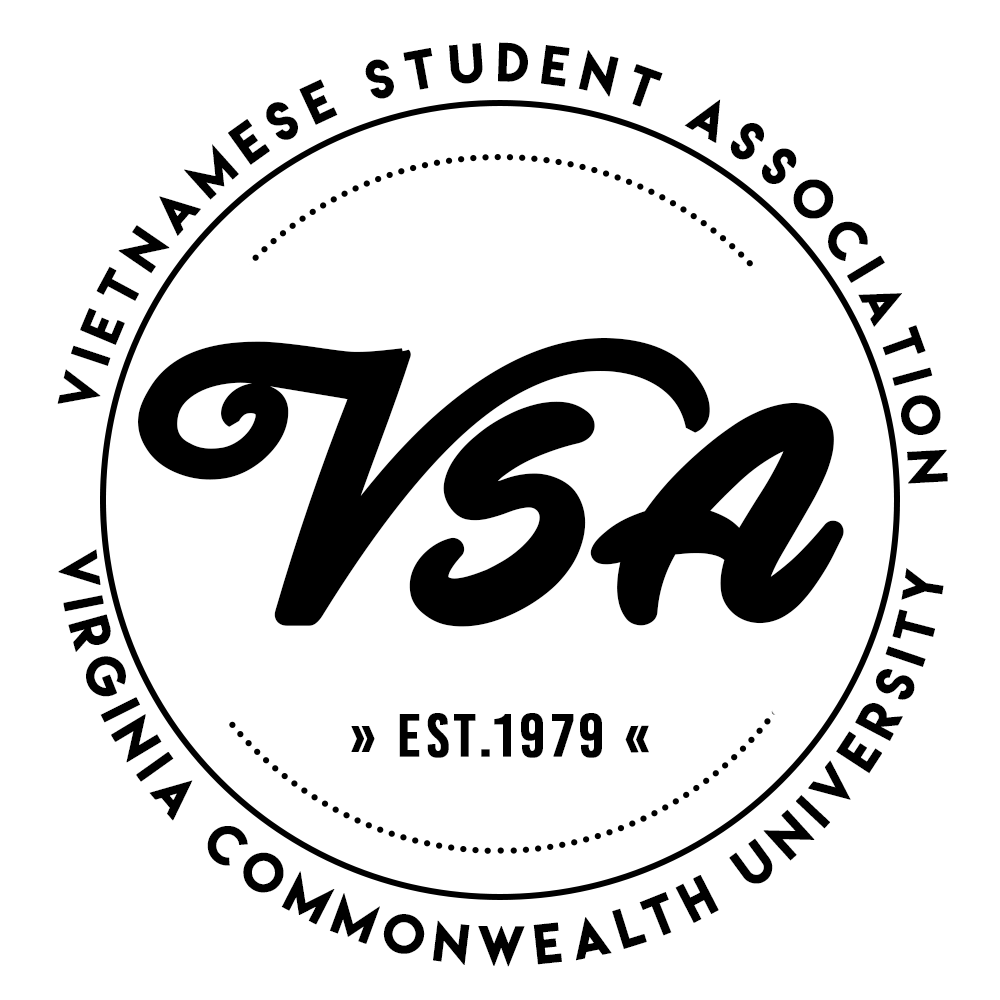
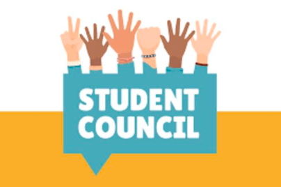
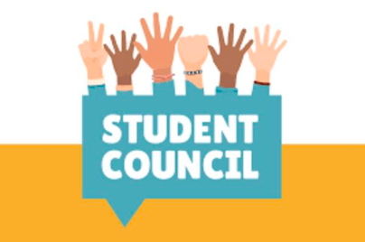

Connie Yu
My name is Connie Yu and I am currently a Pre-business student at the University of California, Riverside. I will later declare my concentration in Accounting, in hopes of attaining a career in International Business one day. As part of my extracurriculars, I am currently serving as an intern for the largest cultural club on campus, the Vietnamese Student Association. Some of my responsibilities include organizing events for 300+ members, assisting staff to alleviate their duties, and promoting a positive club environment. Some of my prior experience includes leadership roles in international clubs (e.g. Kiwanis International) and student government. My skills include speaking three languages (i.e. Mandarin, Cantonese, and English), basic use in Google Suites, and elementary coding skills. Overall, I am currently a university student hoping to obtain more experience in accounting-related jobs.
As part of my work experience, I worked in the food industry as a food prep assistant. I was located in Orange County, California during the summer as part of the OC Night Market vendors. As part of the chain, A-Sha Noodles, I was able to attain plenty of knowledge of the importance of food preparation, cleanliness, and presentation. I was responsible for plating all the dishes and calling out customers. Besides work in the food industry, I also have experience in real estate as an open house assistant. My responsibilities included showing open houses to potential home-owners, informing them of the neighborhood history, and preparing the house to be presentable. It was a summer job that I was recruited for occasionally. Overall, both these jobs taught me the importance of maintaining a business-professional outlook and the fact that presentation is key.
Besides work experience, I have leadership experience in school due to my limitations as a student. Prior to university, I led multiple organizations to plan school-wide events. As a student government officer, I was responsible for guiding committee groups, suggesting new ideas for the student body, and promoting school morale. From my experience in student government, I gained a great deal of knowledge on how to lead and the importance of representation as I was one of the faces of over 500 students. In addition, I helped raised over $80,000 in funds for our student class to use for events and merchandise. Another organization I helped guide was our school’s Key Club International. As one of the chairs in this club, my main responsibility was maintaining strong publicity to attract more members and display what the club is about. During my term, I was able to attract over 80 new members for our spring rush season.
Experience
Real Estate House Presenter
• Presented open houses to potential clients
• Informed clients about neighborhood history
• Experience with personable skills
Food Prep and Presenter
• Responsible for preparing food ingredients
• Presenting food in proper manner
Intern
• Assisted staff members
• Organized events for over 300 members
• Promoted Vietnamese culture
• Helped with publicity and fundraising
Education
UC Riverside
Alhambra High School
Portfolio



